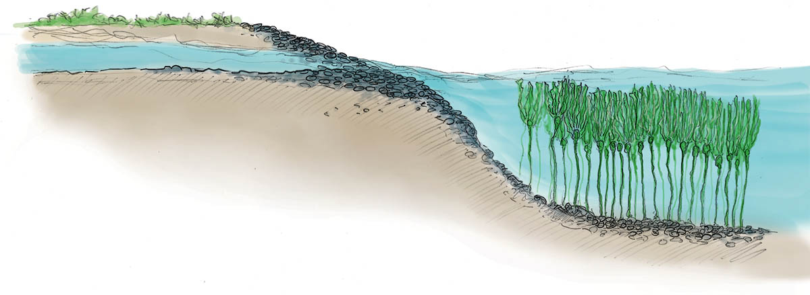
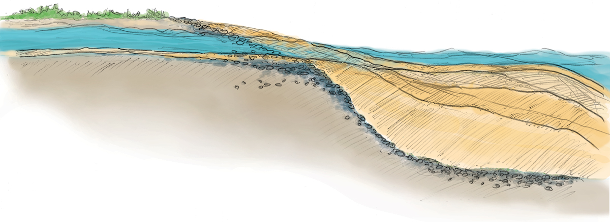

<div class="fixed-placeholder lower-cutaway">
  <div class="aspect-inner">
    <div class="mouth-fade" sticky="section.lower.river-zone" scroll-class="activate" scroll-trigger=".lower .after-deluge">
      
      
    </div>
  </div>
</div>

<div class="before-deluge">
  <%= t.include("_wash.html", { url: "animals/DungenessCrab$_800x412.jpg" }) %>
  <%= markdown.lorem %>
</div>

<div class="after-deluge">
  <%= t.include("_wash.html", { url: "animals/SeaStar$_800x687.jpg" }) %>
  <%= markdown.lorem %>
</div>